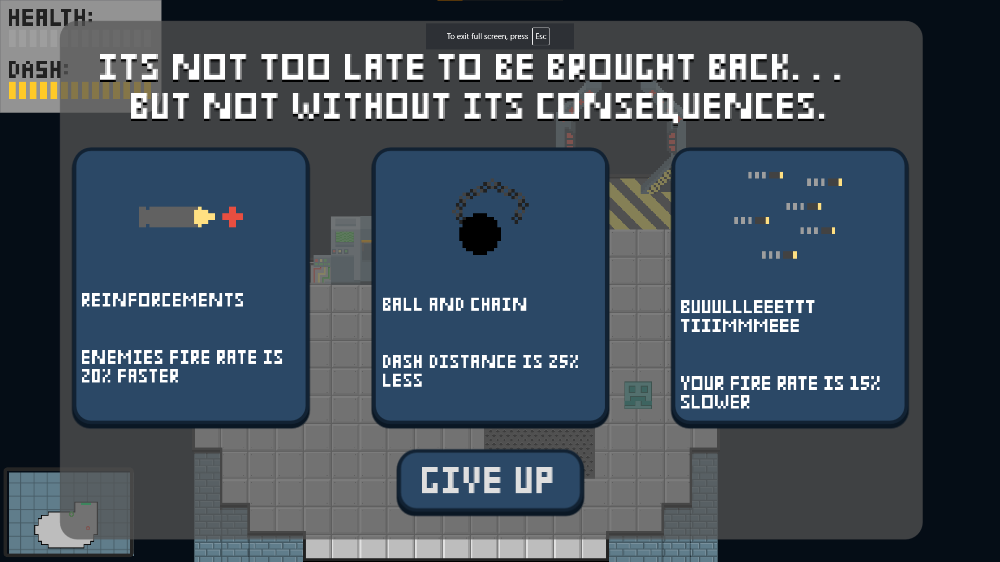
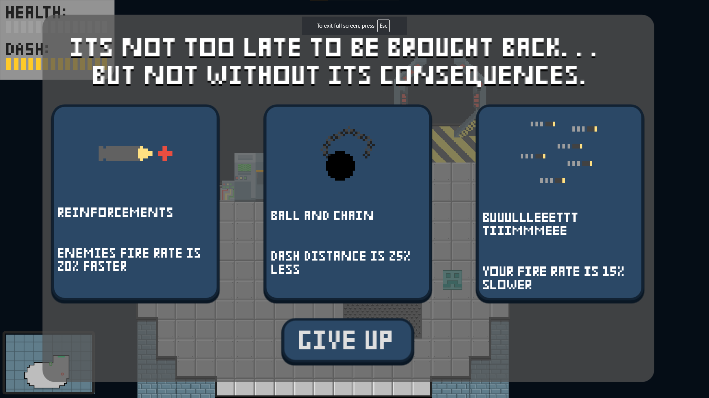

I created Shaped By Failure with 2 friends for a game jam. I joined this as an opportunity to learn and practice level design, game balance, projectiles, and enemy systems.
I did the programming, art, level design, and sound effects, while my friends made the music and helped with playtesting.
You can find the project files and code for the game on my github page here, and a web export of the game on the itch.io submission page here.


 
